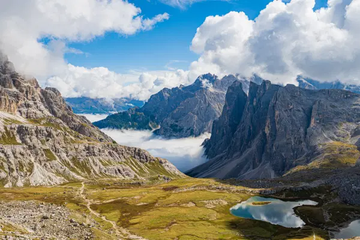
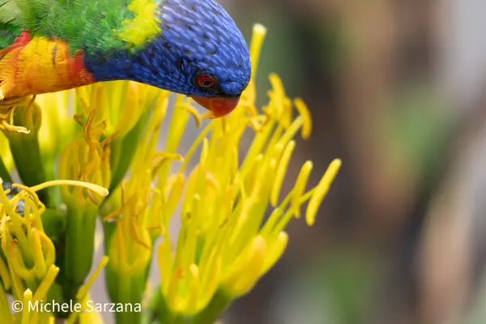
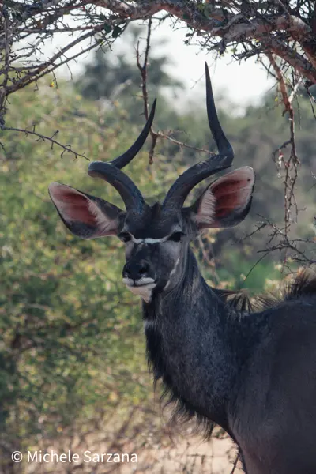
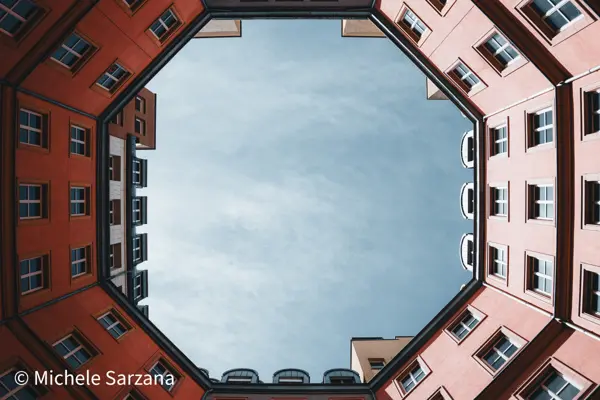
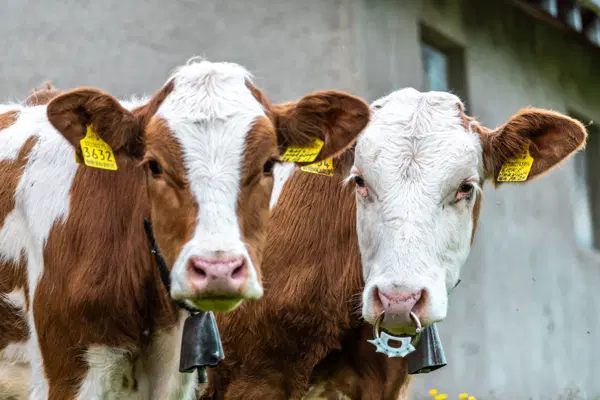

Impara a vedere la luce.
Un corso di fotografia in italiano. Dalle basi tecniche fino ai generi e al progetto. Ogni foto che vedi qui l'ho scattata io.
Muovi diaframma, tempo e ISO. La foto cambia come cambierebbe nella fotocamera.
Prima la luce, poi tutto il resto.
Fotografare è decidere quanta luce far entrare, per quanto tempo e da dove. Il corso parte da qui. Poi passa a come si guarda una scena, ai generi e a come si costruisce una serie.
Ogni lezione ha esempi reali con i dati di scatto. Diaframma, tempo, ISO e focale sono sotto ogni foto. Così vedi le scelte, non solo il risultato.
Ogni modulo chiude con un esercizio da fare con la tua fotocamera o con il telefono.
Programma
Quattro livelli, diciotto moduli. Si sale un passo alla volta.
Il corso è in costruzione. Oggi è online il modulo 2, L'esposizione. Gli altri arrivano uno alla volta, e qui vedi subito quali sono pronti.
-
Le basi tecniche
- 0Prima di iniziareIn arrivo
- 1Come funziona una fotocameraIn arrivo
- 2L'esposizioneDisponibile, inizia da qui
- 3Messa a fuoco e nitidezzaIn arrivo
- 4Obiettivi e focaliIn arrivo
- 5Colore e fileIn arrivo
-
Vedere
- 6Leggere la luceIn arrivo
- 7ComposizioneIn arrivo
- 8Il momentoIn arrivo
-
I generi
- 9Paesaggio e montagnaIn arrivo
- 10StreetIn arrivo
- 11ViaggioIn arrivo
- 12Animali, ambiente per ambienteIn arrivo
- 13RitrattoIn arrivo
- 14Macro, sport, architetturaIn arrivo
-
Avanzato
- 15Luce artificialeIn arrivo
- 16Tecniche avanzate di ripresaIn arrivo
- 17Post-produzioneIn arrivo
- 18Dalla foto al progettoIn arrivo
- +Fotografia e intelligenza artificialeIn arrivo




